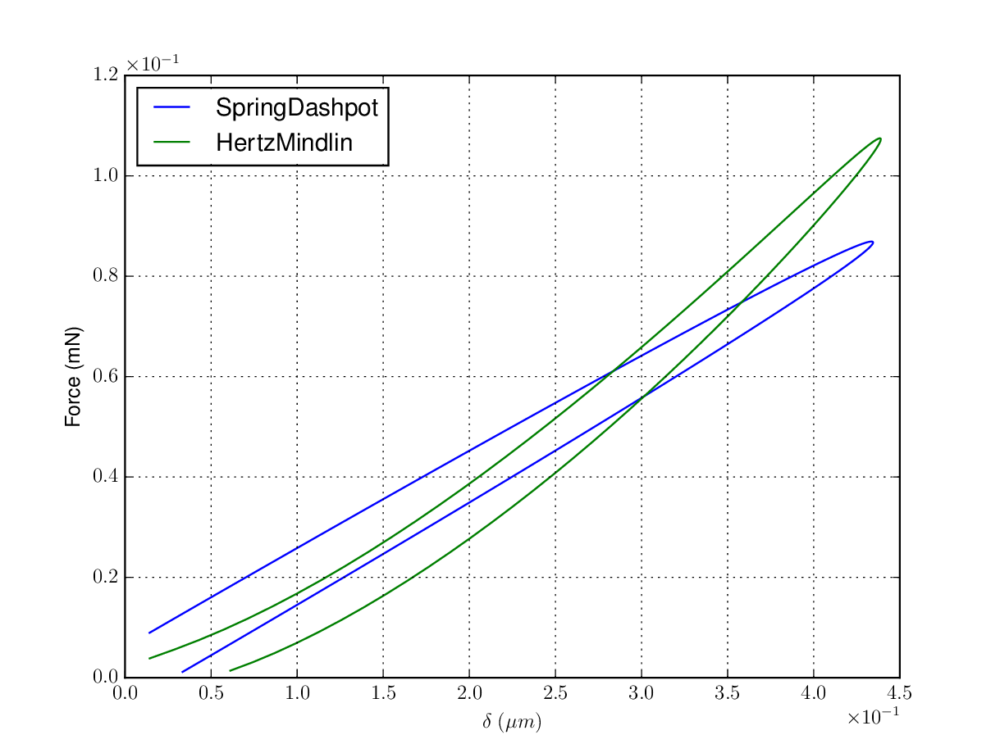
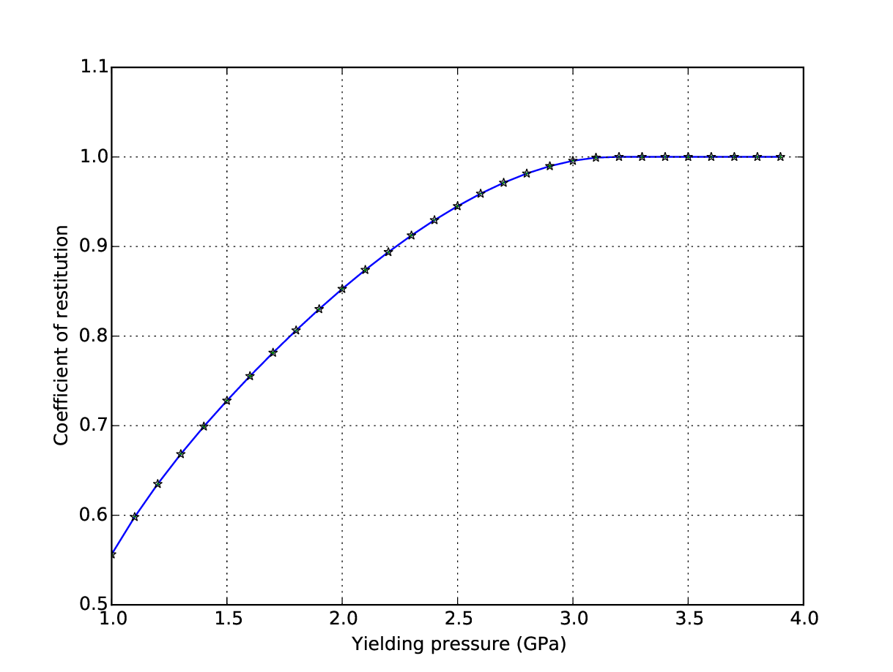
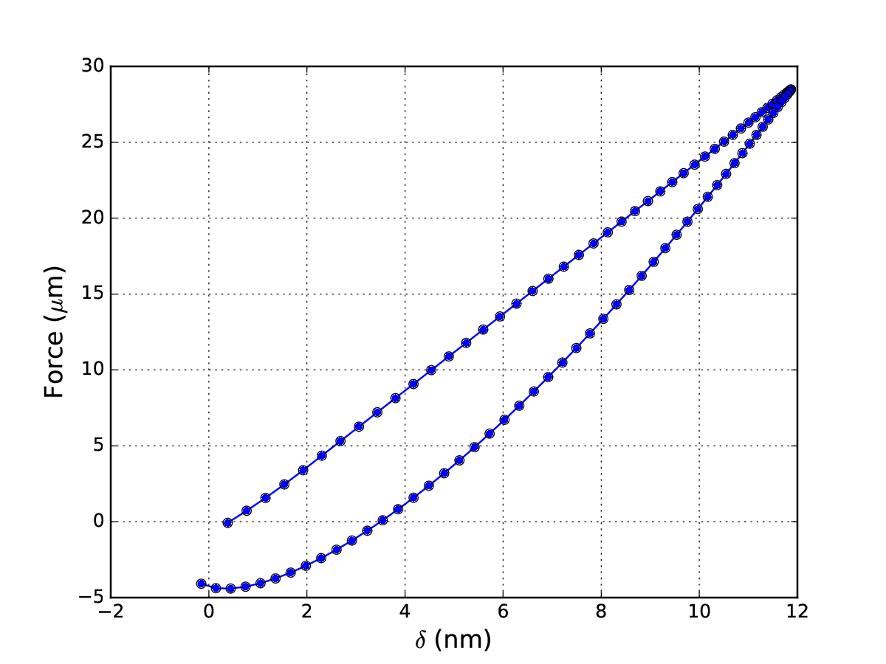

Simulation¶
Submodules¶
Python interface for running DEM engines |
|
A module that provides contact models for running numerical experiments or DEM simulation |
|
Python wrapper for LIGGGHTS library via ctypes |
|
The simple DEM Engine for basic contact analysis |
Introduction¶
The simulation module in PyGran enables users to run DEM simulation using external N-body solvers for large systems, or PyGran’s numerical solver for investigating contact models. A convenient way for users to define materials in PyGran as input for DEM simulation is via Python dictionaries provided in the params module. For instance, properties of stearic acid (in S.I. units) shown below are available in this module:
stearicAcid = {
'youngsModulus': 4.15e7,
'poissonsRatio': 0.25,
'coefficientFriction': 0.5,
'coefficientRollingFriction': 0.0,
'cohesionEnergyDensity': 0.033,
'coefficientRestitution': 0.9,
'coefficientRollingViscousDamping': 0.1,
'yieldPress': 2.2e6,
'characteristicVelocity': 0.1,
'density': 997.164
}
This dictionary can then be used for running simulation or performing analysis. The simulation.models module contains classes for contact mechanical models that can be used to run a DEM simulation with LIGGGHTS, or investigating numerical aspects of particle-wall collisions as shown in the next sections.
See also
Examples of DEM simulation scripts
Warning
This module is experimental. Its API is not yet stable, but it is usable.
Numerical analysis¶
Contact mechanical models¶
simulation.models.model is the basic class from which contact models are derived. This class contains methods that are overwritten by a sublcass that implements a specific contact model. The 3 contact models avaiable are:
The next section demonstrates how these models can be used to perform simple numerical experiments.
Examples¶
Hertz-Mindlin vs Spring-Dashpot:
When instantiating a subclass of PyGran.simulation.models.model, it is important to specify the particle radius in the parameters dictionary (powderX below). The code below shows how the simulation module can be used to compute the force-displacement curves for two different visco-elastic models: spring-dashpot, and Hertz-Mindlin models for a particle of effective radius equal to 100 microns.
import PyGran.simulation as sim import matplotlib.pylab as plt # Use the following two viscoelastic models models = [sim.models.SpringDashpot, sim.models.HertzMindlin] # Define material properties powderX = { 'youngsModulus': 1e8, 'poissonsRatio': 0.25, 'coefficientRestitution': 0.9, 'characteristicVelocity': 0.1, 'density': 997.164, 'radius': 1e-4 } for model in models: model = model(material=powderX) time, soln, force = model.displacement() # Extract normal displacement deltan = soln[:,0] # Plot force-displacement curves plt.plot(deltan, force)Fig. 4 Force as a function of normal displacement computed for the Spring-Dashpot and Hertz-Mindlin models available in simulation.models.¶
{kind=link}
Coefficient of restitution:
An elasto-plastic contact model suggested by Thornton and Ning [TN98] is available in the simulation module used in the following example script to demonstrate the computation of the elasto-plastic force between two spheres of effective radius set to \(100\) microns is shown below.
import PyGran.simulation as sim from numpy import arange, fabs Model = sim.models.ThorntonNing # Define material properties powderX = { 'youngsModulus': 1e8, 'poissonsRatio': 0.25, 'coefficientRestitution': 0.9, 'characteristicVelocity': 0.1, 'density': 997.164, 'radius': 1e-4 } # Initialize variables COR = [] pressure = arange(1e6, 4e6, 1e5) for yieldPress in pressure: powderX['yieldPress'] = yieldPress Cmodel = Model(material=powderX) time, disp, force = Cmodel.displacement() deltav = disp[:,1] COR.append(fabs(deltav[-1] / deltav[0]))Fig. 5 The coefficient of restitution for two spheres of reduced radius of \(100\) microns computed using the Thornton-Ning model available in the simulation module.¶
Note
Artificial (attractive) normal forces in viscoelastic models are by default ignored in PyGran.
{kind=link}
Cohesive particles:
Cohesion models are implemented in the 3 contact models discussed previously. The JKR model is available only in the Thornton-Ning model, which requires the cohesionEnergyDensity (in \(J/m^2\)) keyword when supplying the material dictionary to the model. The code below shows how the force-displacement curve is computed with the Thornton-Ning model for a cohesive wall-particle collision.
# Define powder properties with cohesion powder = {'radius': 2e-5, 'yieldPress': 4e7, 'density': 1500.0, 'youngsModulus': 6e9, 'cohesionEnergyDensity': 0.04, 'poissonsRatio': 0.25, 'characteristicVelocity': 0.04} # Compute the force-displacement curve model = sim.ThorntonNing(material=powder) time, delta, force = model.displacement()The curves shown below are computed for a sphere of reduced radius \(100 \mu m\) and surface energy \(0.04 J/m^2\) using the Thornton-Ning model implemented in PyGran.
Fig. 6 Force as a function of normal displacement computed for the Spring-Dashpot and Hertz-Mindlin models available in the simulation.models module.¶
Note
Cohesion is turned on by supplying a cohesionEnergyDensity value to the contact models available in PyGran.
{kind=link}
{kind=link}
DEM simulation¶
Engines in PyGran¶
External N-body (DEM) solvers such as LAMMPS or LIGGGHTS can be called from PyGran.simulation provided there is a supported interface that can import this solver as a separate module (in the form of a shared object on Unix or dynamic link library on Windows). An engine provides an interface for PyGran to call specific methods in the DEM solver. While PyGran provides an engine for LIGGGHTS, it can be readily used for post-processing with solvers such as Yade and ESyS-particle that have their own Python APIs.
Fundamentals¶
Any PyGran engine must provide a simulation.DEMPy class that is instantiated by a simulation.DEM object. The latter must be created by the user at the onset of any DEM simulation:
sim = simulation.DEM(**args)
where args is a Python dictionary that contains keywords specific to the engine selected to setup and run the DEM simulation. The keyword engine (by default simulation.engines.liggghts) in args is used to specify which engine to use for running DEM simulation. Currently, PyGran supports only LIGGGHTS [KG11] as an N-body solver. For that purpose, LIGGGHTS must be installed as a shared library (see Configuration with LIGGGHTS). The __init__ constructor in simulation.DEM creates and/or changes directory to the user-specified output directory and initiates logging for PyGran (pygran.log) and LIGGGHTS (liggghts.log).
Other keywords for DEM engines are covered in simulation.DEM.